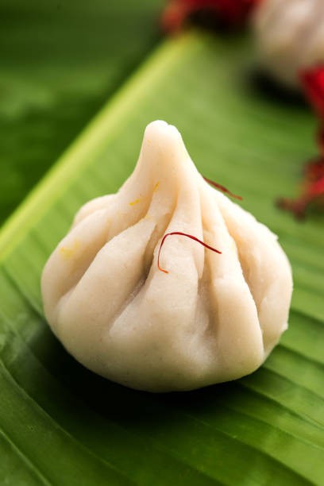
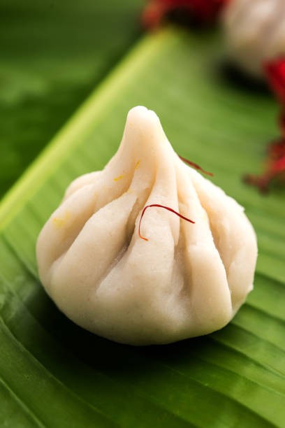

Taste the Best of Maharashtra!!!!🥘🫓 a Discover the rich and authentic flavors of our state with traditional dishes like Puran Poli, Ukadiche Modak, and Vada Pav. Each recipe reflects the true essence of Maharashtrian culture blend of sweetness, spice, and warmth. From festive delights to everyday favorites, every bite brings the soulful "Swad Maharashtra Cha" to life. Let's celebrate the pride of Maharashtra through its irresistible taste!